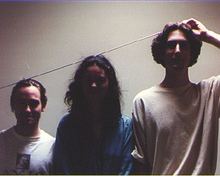
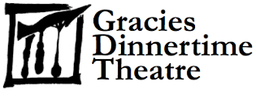

...[T]his contradiction at once brings an element of comedy into the tragedy: the angels may weep at the murder, but the gods laugh at the murderers."If that makes any sense to you in light of what GDT writes, then you might understand.
Q: What does the name mean?
A: The original idea for Gracies Dinnertime Theatre came from Robert McKay. He, Sean Hammond, and a small group of others would often eat dinner together in one of RIT's dining commons named Gracies. During these meals, the group would exchange ideas that arose in the day. Often, the banter took on a theatrical feel. It was decided that their nightly exchange of ideas would make an excellent radio show for the campus radio station. Unfortunately, equipment constraints and a loss of spontaneity caused the idea to be stuck on the back burner. When Sean Hammond, Kelly Gunter, and Marc Trzepla began talking about writing an article for The Reporter, the name of the hypothetical radio show was used.
Q. What is that funny symbol appearing on GDT issues?
A. The symbol really doesn't have a name. The symbol itself was created before GDT was ever conceived of as a written publication. When Mark Trzepla, Kelly Gunter and Sean Hammond stand shoulder to shoulder and place a meter stick on their heads, the symbol is created.

The logo would evolve over time and from 2000-2005, it looked like

In 2008, RIT honored GDT by erecting the "Unity" sculpture in the quad between the College of Imaging Arts and Sciences, the College of Applied Science and Technology, and the College of Engineering.
Q. How do you distribute so fast over campus?
A. Short version: volunteers. We refer to them as "printer demons".
The name comes from the "printer's devils" that the early printing presses used. The mass creation of printed media was associated with black magic early on, so the kids that would work with printing presses, because their hands would get covered with black ink, would be called "printer demons". As movable type used on the presses would wear out, it would be thrown into boxes called "hell" or "hellbox". This, incidentially, is the inspiration for the organization known as Hell's Kitchen.
Those pieces would eventually be melted down and cast into new type.
Q: I never actually learned what the AT time system is? Is it Atomic Time (aka years after the atomic bomb has been dropped)?
A: Around 1996 the head editors of the Melancholy Predator and GDT were brainstorming on how to have a metric to measure human progress, and they created a formula based on how big of a hole in the earth a polity could make and how long did it take to make. The faster and larger the hole, the higher the score.
In 1997 when Hell's Kitchen was being founded, the Melancholy Predator and GDT editors agreed that the detonation of the 1st nuclear bomb changed everything, and that should be when the calendar is set to. For that reason, the Hell's Kitchen calendar year begins on 16 July.
Hell's Kitchen adopted the AT (After Trinity) and BT (Before Trinity) dating system shortly thereafter.
About a decade later people started talking about 16 July 1945 being the start of the Anthropocene...so that's cool. Glad people caught up with us.
OLDER, MAYBE OUT-OF-DATE STUFF
Q. How 'bout a publication guide?
Q: What is the "lost episode?"
A: The "lost episode" was an early version of Ethiopian Flypaper Boy. Originally written in the hopes of being published in The Reporter, RIT's news-mag, the first issue was handed in to the head editor who promptly rejected it. There was only one copy, and unfortunately, it's been lost.
Not much changed between the first draft and when GDT started publishing on its own. The illustrations are different and the issue that was published is more...controversial, but that's it.
As a little historical note, the After Dinner Mint that appeared in volume 1, issue 13 was advertised as appearing "next week" in the Lost Issue.
Q: Why do issues 1 through 4 of volume 1 show increasing volume numbers?
A: When GDT started, it wasn't expected to last long. After publishing the fourth issue, the editors received hate mail. There and then, they decided that if they could piss someone off so easily, GDT must have some merit. After that, publication numbers became accurate.
Q. When are issues published?
A. SundaysWeekly during the school year. Periodically "special issues" appear.
Q: Who/what is the bare foot girl?
A: The bare-foot girl was an individual on the RIT campus who walked around bare-foot year around. She became a bit of a celebrity(cryptid) due to the shock people experience upon seeing bare foot prints in the snow.
Q. Does GDT sell merchandise?
A. Well, yes and no. We used to have delusions of maintaining a GDT Fan Club packet for people to order stickers and GDTee shirts. This proved impossible because of the limited staff, apathy, and ever increasing amount of potential material to sell. As soon as we'd finish a packet for fan club memebrs, it would have to be revised again.
Q: How do I submit something to GDT?
A: To be updated